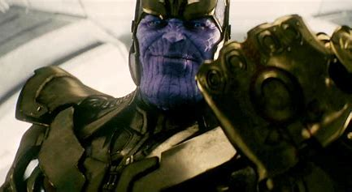

Thanos eventually realized that there were far too many lifeforms in the universe for him to balance by himself. Deducing that the Infinity Stones, objects of immense power that held considerable dominance over the various forces that occupied the universe could solve this issue permanently, Thanos made it his life's goal to gather them, and forged several alliances to locate them. The first Stone he located was the Mind Stone, placing it within a Scepter that was capable of manipulating minds as a means of better controlling its formidable power.
Through many years of searching, Thanos would tell Nebula that he intended to claim all the Stones and use them to wipe out half of all life before retiring permanently on his Farm and live out a peaceful life, believing that the universe would be grateful for his actions. Eventually, Thanos had discovered a lead on the Orb's location, sending Nebula and Gamora to the Cloud Tombs of Praxius under Korath's command. Nebula fell victim to a trap during the mission, and Thanos, not one to tolerate failure, forbade Gamora from rescuing her.
As a result of Thanos' disregard for her, Nebula was forced to amputate her own arm to escape. The Orb was never recovered, but Thanos let the failure pass and resumed his search. He had also sent Gamora to find the Soul Stone, but she lied and reported back to him that her search had been unsuccessful, while in actuality she found a map to the location of the Soul Stone and burned it to ashes. However, Thanos, being as perceptive as he is, easily saw through her but simply allowed her to believe she had fooled him for the time being. Upon allying with Ronan the Accuser, Thanos commanded the Kree to conduct several massacres adhering to Thanos' agenda, including one where Drax the Destroyer's entire family were killed by Ronan.